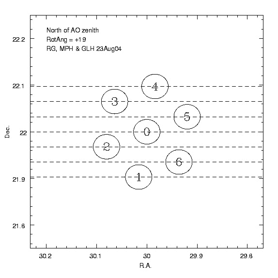

|
The seven beams of ALFA sweep across
seven parallel tracks of sky. We orient the array (as illustrated in this
diagram) so that the beams tracks follow lines of constant
declination, each offset from the other by 2.1 arcminutes. Suppose
the ALFALFA schedule for a given day (see September 4, 2005 at the
team
http://www.naic.edu/~a2010/scheds/a2010_sched05.txt schedule page)
targets the drift at +27d51'42".
The central beam (designated "0") is the one
which is set to declination of +27d51'42".
List the resultant
seven declinations covered by
the seven beams, in order, from
south to north. If you are interested, you can refer to the
memo we wrote on ALFA beam rotation.
In fact, if we did not move the telescope at all,
the beams would sweep through tracks in current epoch Declination
(according to the date of each observing run). We want to be
sure that our final map is constructed from parallel tracks, so
we need to make sure that the beams drift across the sky according
to constant declination in J2000 (the epoch of 1 January 2000,
a standard in astronomy today). We thus apply a small adjustment to
the telescope zenith angle every few minutes; see the discussion
of this issue here.
The half-power beam width (HPBW) of the telescope at 1.4 GHz
(the frequency of the HI line) is about 3.5 arcminutes.
How long does it take for a source to
traverse the beam?
|
 |